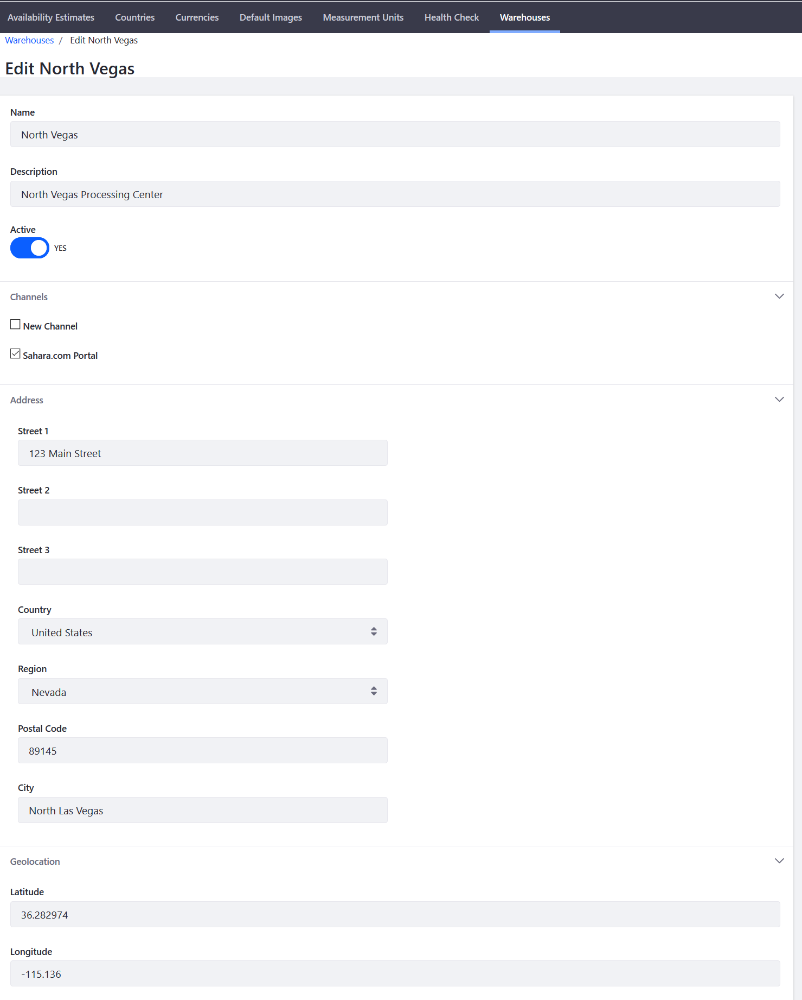

Adding a New Warehouse¶
This article describes how to add warehouses to manage inventory.
Go to Control Panel → Commerce → Settings.
Click the Warehouses tab.
Click the Add Warehouse button.
Enter the following:
- Name: Warehouse name (e.g. North Vegas Warehouse)
- Description: Warehouse description (e.g. North Vegas Processing Center)
Switch the toggle to Active.
Enter the warehouse address.
Select any applicable channel.
Enter the geolocation:
- Latitude: 36.282974
- Longitude: -115.136

Click Save.
The new warehouse is now active and available as an option in the Shipment tab.
Additional Information¶
Before you can enter the address for a warehouse, you may need to enter and activate the applicable country and region (state or province) in the Countries tab at Control Panel → Commerce → Settings.
For more detail see Country Options.